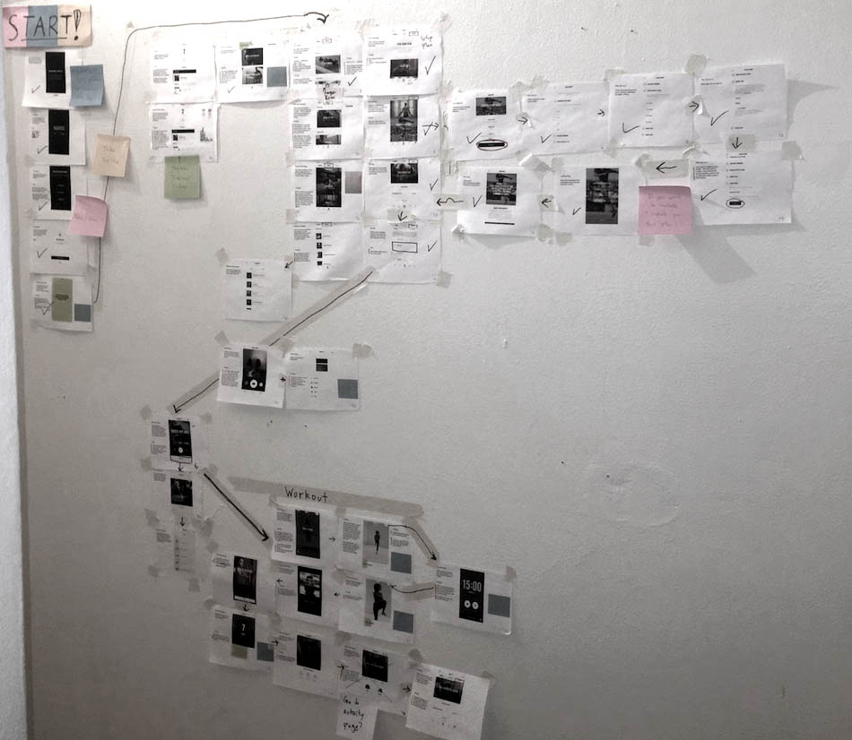

Concept

Mapping out user flows
AWA Fit is a fitness app geared specifically for Latin America that brings modern fitness techniques, professional trainers and personalized workout plans to everyone, which used to be reserved only for those that could afford it. It also offers challenges for novice and advanced athletes alike to compete on a global level.
AWA Fit gives all of Latin America the resources of professional latin trainers, custom workout plans, and community challenges so that a developing region can get the modern fitness tools it needs.
“AWA Fit will harness the power of Zink’s health and fitness suite and put it in the hands of anyone with a smartphone. We seek to be the all-in-one app for healthy living, personal fitness, and the every growing marketing of live competition”
-Zink Fitness
Core Features
- Request a Coach
- Tailored Workouts
- Selfie Comparison
- Challenges, Trophies, Competitions
- Fitness Plan
- Ad version / Paid version